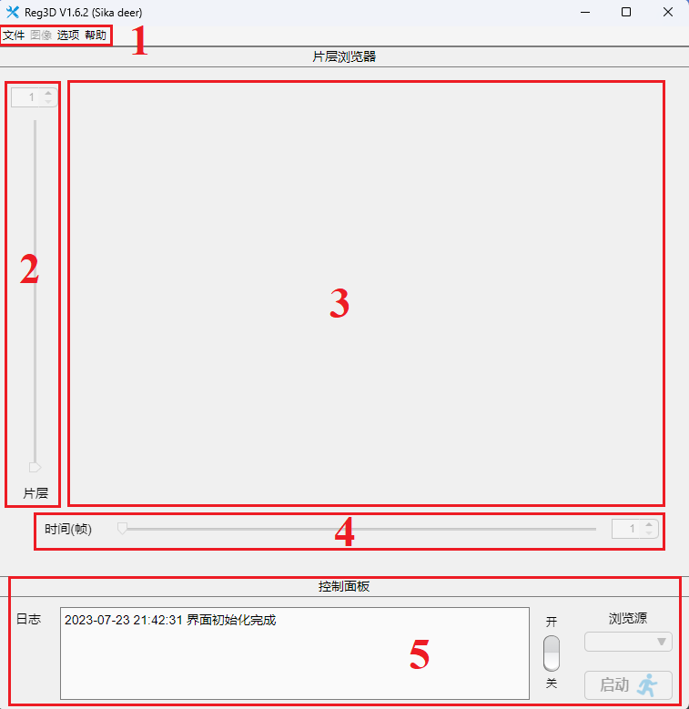
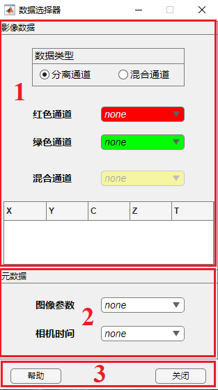
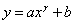
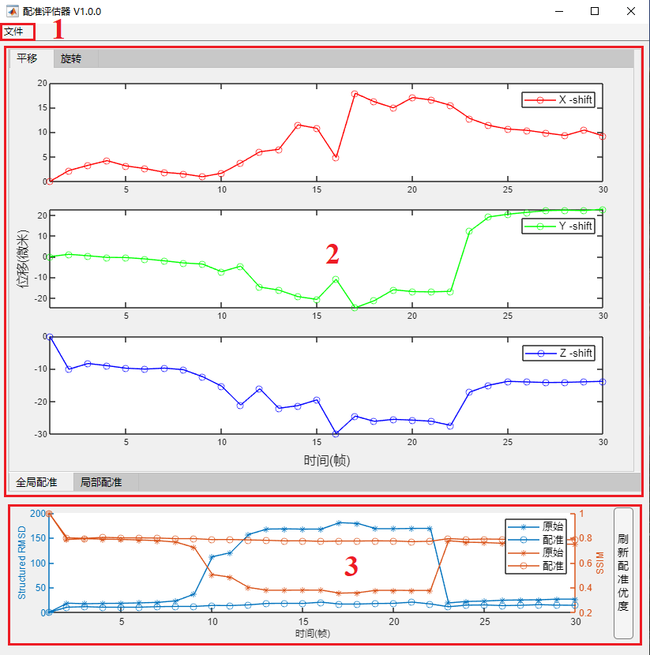
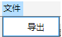
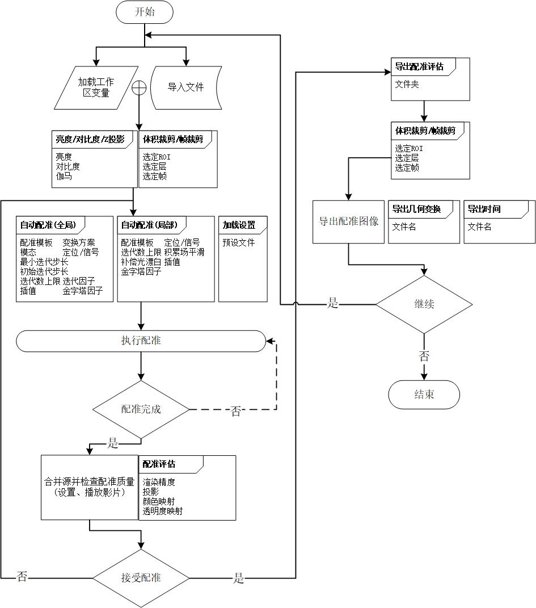

帮助文档(for V1.6.4 Sika deer)
运行环境：Windows 11/Windows 10/Ubuntu 20.04 LTS + MATLAB R2023a/R2022a&b
一、配准器

区域1. 菜单栏，包括文件操作、基本图像处理、播放器设置、配准设置导入/导出及帮助文档。
区域2. 片层滑块，上下滑动用于浏览三维体数据不同片层(一般为 Z 方向)，可使用键盘 "UP" 或 "DOWN" 控制。
区域3. 浏览器主窗口。
区域4. 时间滑块，左右滑动用于浏览四维体数据不同帧，可使用键盘 "LEFT" 或 "RIGHT" 控制。
区域5. 控制面板，功能包括控制配准启动、切换浏览源、指示系统状态及显示系统日志。
1.菜单栏
1.1 文件
1.1.7 退出
无。
1.2 图像
1.3 选项
1.4 帮助
1.4.2 文档
无。
2.片层滑块
3.浏览器主窗口
3.2 右键菜单
通过在浏览器主窗口左右空白区域中右键单击唤出右键菜单。
4.时间滑块
5.控制面板
二、数据选择器

区域1. 影像数据，读入分离通道或合并通道高维图像数据。
区域2. 元数据，读入图像参数表与相机时间。
区域3. 控制按钮，关闭数据选择器并提交所选变量。
1.影像数据
2.元数据
3.控制按钮
3.1 帮助
无。
三、亮度/对比度调节
区域1. 像素直方图，显示当前像素值分布。
区域2. 亮度滑块，控制图像亮度。
区域3. 对比度滑块，控制图像对比度。
区域4. 伽马滑块，控制图像伽马。
1.像素直方图
像素直方图用于显示配准器当前浏览图像的像素值分布，颜色与所选通道保持一致。黑色实线为数据—显示调谐曲线。
数据—显示调谐曲线形式为 ，其中x为数据像素值，y为显示像素值，a为对比度，b为亮度，g为伽马。
2.亮度
通过调整亮度使图像中所有伽马像素值增加或减少相同的强度。
3.对比度
通过调整对比度使图像中所有伽马像素值强度增加或减少相同的倍数，用于增强或减弱图像对比度。
4.伽马
通过调整伽马，用与校正显示输出以符合人眼视觉。
四、配准评估器

区域1. 菜单栏，包括导出配准评估结果。
区域2. 配准结果，分为全局配准与局部配准结果可视化，其中全局配准包括平移与旋转两部分。
区域3. 配准优度，使用SRMSD 与 SSIM作为配准结果度量，评估配准程序相对与模板帧在每一帧上的表现。
1.菜单栏
1.1 文件

通过导出选项导出全局配准结果图片与配准优度结果图片。
2.配准结果
2.1 全局配准
2.2 局部配准
五、工作流程
